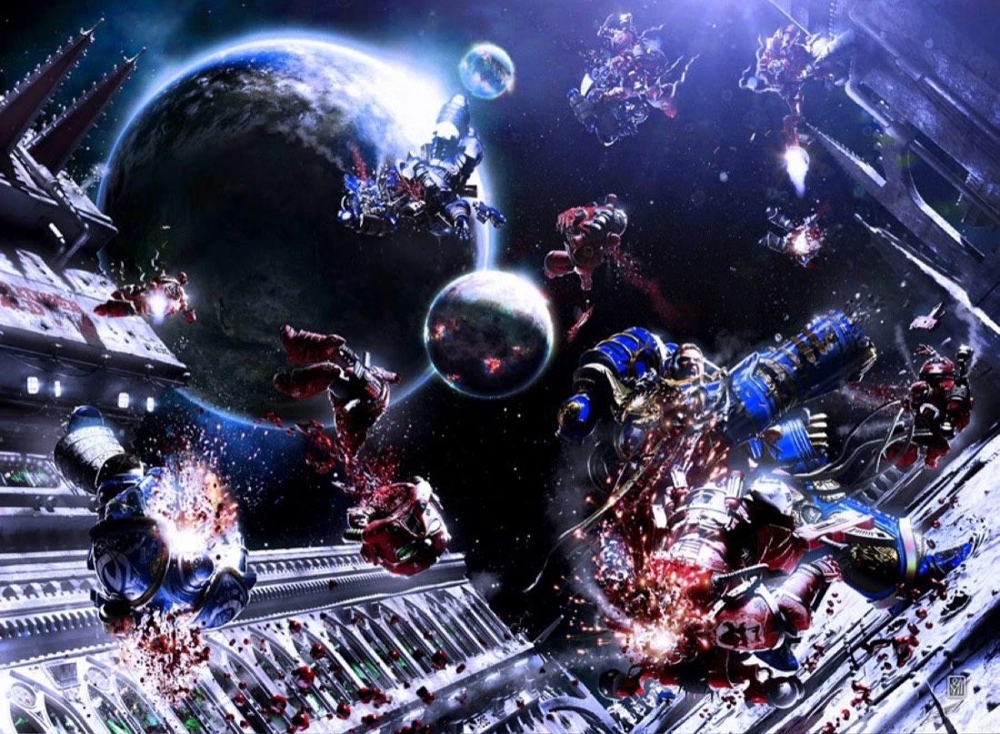
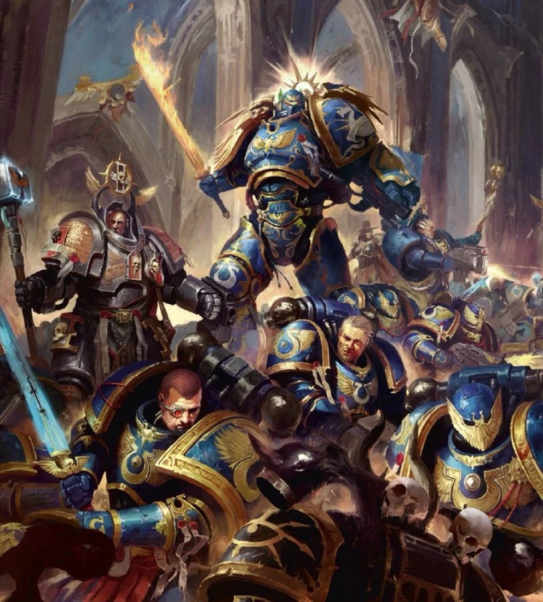

Ultramarines
| Ultramarines XIII Legion, the War-born | |
|---|---|
Heraldry of the Ultramarines | |
| Founding | First Founding (M30) |
| Legion number | XIII |
| Primarch | Roboute Guilliman |
| Chapter Master | Marneus Calgar |
| Homeworld | Macragge, in the Ultima Segmentum |
| Realm | Ultramar |
| Fortress | Fortress of Hera, Macragge |
| Allegiance | Loyalist; Imperium of Mankind |
| Colours | Lapis blue, white and gold |
| Battle cry | "Courage and Honour!"; "We march for Macragge!" |
| Legion size | About 250,000 at the outbreak of the Heresy |
| Chapter size | About 1,000 (Codex Chapter) |
| Combat doctrine | Codex-pure combined arms; the generalists of the Adeptus Astartes |
| Gene-seed | Among the most stable of all; about a 10% chance of mutation in Firstborn seed |
| Notable battles | |
| Ullanor, Battle of Calth, Battle of Thessala, Battle of Macragge (745.M41), the Plague Wars, Battle of Lion's Gate | |
| Successors | |
| More than fifty, including the Black Consuls, Novamarines, Doom Eagles, Silver Skulls, Aurora Chapter, Iron Snakes and Marines Errant | |
The Ultramarines are the XIII Legion of the Space Marine Legions and, since the Second Founding, a Space Marine Chapter of the Adeptus Astartes. They were the Legion of Roboute Guilliman, the author of the Codex Astartes, and they hold the stellar realm of Ultramar in the eastern Ultima Segmentum as a fief of the Imperium. They are generally counted the most orthodox, the most disciplined and the most widely respected of the Imperium's Space Marines. The Chapter has been the parent of more Successor Chapters than any other Legion.[1][2]
The Legion fought in the Great Crusade as the War-born, under officers who had held it together before their primarch was found, and they took the name Ultramarines after Guilliman took command and made Ultramar the base of a great independent crusade. Betrayed by the Word Bearers at Calth at the outset of the Horus Heresy, the Legion lost well over a hundred thousand warriors and saw its realm devastated, but recovered and was later among the first to help drive the Traitors back in the Great Scouring. Guilliman then used the authority of Lord Commander and Imperial Regent to reorganise the Imperium's armed forces.[2][3]
Guilliman was struck down in 121.M31 at the Battle of Thessala by the Daemon Primarch Fulgrim, and for ten thousand years lay in a stasis field in the Fortress of Hera. In the closing years of the 41st millennium, in the aftermath of the fall of Cadia, he was restored to life by the Archmagos Dominus Belisarius Cawl, and took up the offices of Lord Commander of the Imperium and Imperial Regent once more. His return and the Primaris Space Marines that Cawl brought with him have transformed the Chapter, and the whole Adeptus Astartes, in the Era Indomitus.[4][5]
Legion era
[edit]
The War-born
[edit]The XIII Legion was among the earliest created by the Emperor of Mankind. Its Legionaries came to be known as the "War-born" because they had fought for decades without a primarch, under officers who held the Legion together and organised it by the Emperor's own principles. The Legion's organisation, which the Imperial record calls the Principia Bellicosa, was rigid and standardised, and its warriors served in companies of about a thousand, grouped into formations of ten companies. It was an unusually conservative body, which preferred to keep a tradition once made rather than reinvent it.[2]
The Legion's primarch, Roboute Guilliman, was found in 837.M30 on the world of Macragge, where he had been raised by the planet's Lord Regent, Konor. According to the Imperial record Guilliman had already begun to build a small empire from the ruins of his adoptive world, using the logic and the legal tradition he had learned from the Macraggan noble houses. The Emperor met him on terms of unusual openness, as he had with no other primarch, and Guilliman swore his loyalty and took command of the XIII.[2]
Ultramar
[edit]Guilliman was granted command of the 12th Expeditionary Fleet and, with the Emperor's permission, made Macragge the base of an independent crusade across the eastern reaches of the galaxy. The newly named Ultramarines extended their range over about a Terran century, bringing human worlds to compliance and exterminating hostile xenos holds, and a number of Imperial records credit them with the liberation of more human worlds than any other single primarch's forces. Each world was established afresh, with defences, an administration and the agents of the Imperial Truth installed behind the Legion's advance. This sector-wide domain, with its core worlds, became the Realm of Ultramar, which popular tradition numbered at five hundred worlds. Its farms, forges and training grounds supplied the Legion and made it unusually resilient to losses.[2]
Guilliman remade his Legion's organisation to follow a dual doctrine that weighed the practical qualities of the warrior, such as courage, discipline and adaptability, against the theoretical ones of analysis, precedent and planning. The result was a Legion that studied other forces and adopted the best of their methods. It maintained few specialised formations and relied on overwhelming force applied by flexible, interlocking units, a doctrine the Legion's own records call the Logos Lectora. The Legion's strength at the beginning of the Heresy is recorded as about a quarter of a million Legionaries.[2]
Horus Heresy
[edit]The Ultramarines had marched at Ullanor beside the other Legions, and Guilliman was counted among the Emperor's most trusted sons. Horus's conspirators nevertheless judged the XIII Legion, with its quarter of a million warriors and its self-sufficient realm, a threat that had to be struck early. The task fell to the Word Bearers, who attacked Ultramar in the opening phase of the Heresy. At Calth the Word Bearers, led by their First Captain Kor Phaeron, fell on the Ultramarines in an ambush that rendered the planet's surface nearly uninhabitable. The Ultramarines recorded 119,422 Legionaries killed and a further 28,392 rendered unfit when Guilliman withdrew, and almost forty thousand more remained on Calth to protect the civilians who could not be evacuated. Only five whole chapters of the Legion, known as the Unmarked, escaped the Mark of Calth, and the Calth survivors long formed a distinct body of veterans within the Legion.[3][2]
The Warp storm called the Ruinstorm cut Ultramar off from the Astronomican and from Terra, and Guilliman, fearing that the Throneworld might have fallen, founded a rump government known as Imperium Secundus. Imperial accounts of that realm differ: Guilliman's own records treat it as a necessary contingency, while sources on Terra regard it as a usurpation. All sources agree that the Ultramarines were not at the Siege of Terra, which was over before Guilliman could bring his forces to the Sol System.[3][6]
Great Scouring and the Second Founding
[edit]Guilliman took his Legion to join the hunt for the Traitors in the Great Scouring, and fought at several of its battles. The Ultramarines are recorded to have destroyed Colchis, the home of the Word Bearers, and to have fought the Alpha Legion at Eskrador, where Guilliman is believed to have killed his brother Alpharius, though accounts of that duel vary and the Alpha Legion's agents later reappeared in Imperial records under the same name.[3] The primarch's great work in these years was the Codex Astartes, which split the Legions into Chapters of a thousand Marines and set out the organisation that the Chapter still uses. In the Second Founding of 021.M31 the XIII Legion itself was divided: the Ultramarines Chapter kept the name and the homeworld, and several Successors were created from its gene-seed.[7]
Chapter era
[edit]Guardians of Ultramar
[edit]The Ultramarines Chapter led the Imperium's recovery in the centuries after the Heresy. Guilliman governed the Imperium as Lord Commander and Imperial Regent for about a century, reforming the Imperial bureaucracy and the military and keeping the Imperium's frontiers intact, and in the Great Scouring the Chapter and six Successors hunted the Traitor Legions through the stars. The war ended for Guilliman in 121.M31 at the Battle of Thessala, where Fulgrim lured the Ultramarines fleet into a trap, and Guilliman, boarding the Emperor's Children flagship with a strike force, was poisoned by the Daemon Primarch. His barely living body was placed in a stasis field and enthroned in the Shrine of the Primarch within the Fortress of Hera, where it remained for ten thousand years.[2]
In the millennia that followed, the Chapter held Ultramar against a long succession of threats: Ork Waaagh!s, Chaos raiders, Tyranids and the Traitors who came back from the Eye of Terror. Its most celebrated defence is the Battle of Macragge in 745.M41, when Hive Fleet Behemoth, the first of the great Tyranid fleets to reach the Imperium, descended on the Chapter's homeworld. Warned by the Inquisitor Fidus Kryptman, Chapter Master Marneus Calgar had greatly reinforced the planet's defences. The Chapter won the First Tyrannic War, but at the cost of the whole Veteran First Company, which died holding the northern polar defences.[5][8]
Era Indomitus
[edit]
The Chapter was already stretched by the war in Ultramar when the thirteenth Black Crusade of Abaddon the Despoiler reached its height. An Iron Warriors invasion of Ultramar was defeated in about 999.M41, and the Despoiler then sent part of the Black Fleet against Macragge to destroy the survivors of Cadia, the Celestinian Crusade, who were travelling to the Fortress of Hera by the Webway in the company of Saint Celestine, Cawl, Inquisitor Katarinya Greyfax and Aeldari of the Ynnari. In the course of the defence, Cawl and the Aeldari restored Guilliman to life. The Ultramarines record that the primarch walked from the Temple of Correction in the Armour of Fate, bearing the Emperor's Sword, and that his first act was to lead his warriors against the Black Legion on the walls of the Fortress of Hera.[4][5]
Guilliman then went to Terra, where he fought at the Battle of Lion's Gate against a Khornate daemon host, and was named Lord Commander of the Imperium once more. He ordered Cawl to release the Primaris Space Marines, the gift of ten thousand years of labour, and launched the Indomitus Crusade with them. The first Primaris Ultramarines went to Ultramar aboard the fleet named Fleet Avenger under Captain Cato Sicarius, and many others were assigned to the Chapter's companies. Calgar was among the first of the Firstborn to cross the Rubicon Primaris, with Cawl himself overseeing the surgery, and in so doing set the example for the Chapter and for the other Chapters of the Adeptus Astartes.[5][4]
The Plague Wars are the greatest of the Chapter's recent wars. In the wake of the Noctis Aeterna, the servants of Nurgle assailed the worlds of Ultramar and the stars to its north, now called the Scourge Stars, and every inhabited planet of the realm suffered heavy losses. Imperial scholars disagree on when the Plague Wars began and on which wars belong to them, and the earliest accounts date their opening to before the Great Rift. Guilliman and the Ultramarines fought the Death Guard and their primarch, the Daemon Prince Mortarion, in a long campaign, and Ultramar, after heavy fighting, was cleansed of the plague.[5]
Organisation
[edit]The Ultramarines are the epitome of the Codex Chapter. Their organisation is that of the Codex Astartes itself: ten companies, four branches under the Chapter Master, and the full set of captains' offices. The Chapter's Veteran First Company is stationed at the Fortress of Hera; the Second to Fifth Companies, the Battle Companies, are known by their own names, such as the Warriors of Ultramar and the Guardians of the Temple; the Reserve Companies have their own traditions; and the Tenth Company is the Scouts. Since the Indomitus Crusade the Chapter's squads include Primaris Intercessors, Hellblasters and Aggressors alongside the older Tacticals, Assault and Devastator Marines.[7][5]

| Office | Holder |
|---|---|
| Chapter Master | Marneus Calgar, Lord of Macragge |
| Master of the Forge | Fennias Maxim |
| Master of Sanctity | Ortan Cassius |
| Reclusiarch | Julianus Akillan |
| Chief Apothecary | Corpus Helix |
| Chief Librarian | Varro Tigurius |
| Captain, 1st Company | Severus Agemman, Regent of Ultramar |
| Captain, 2nd Company | Cato Sicarius |
| Captain, 3rd Company | Demetrian Titus (Master of the Watch) |
| Captain, 4th Company | Uriel Ventris |
The table gives the principal officers recorded in the third year of the Indomitus Crusade. The Chapter's command changes with the losses of war, and some entries are older than others. The Primarch and Lord Commander is not counted among the Chapter's officers.[5]
Homeworld and recruitment
[edit]The Ultramarines' homeworld, Macragge, is a temperate world in the Ultima Segmentum. It is a planet of ordered cities, agri worlds and great mountain ranges, whose culture the Ultramarines have modelled on the republic of ancient Terra; Guilliman built the Fortress of Hera, the Chapter's fortress-monastery, in its northern ranges. Macragge is the centre of Ultramar, whose planets also supply the Chapter's recruits. To be chosen as a Neophyte is the highest honour among the nobility of Ultramar. Aspirants are tested by an Exposure Trial in a hostile environment, or by combat, and those who are accepted take an oath of loyalty to the Chapter, the Codex and the Emperor.[1][8]
Combat doctrine and culture
[edit]The Ultramarines are the generalists of the Adeptus Astartes. They are competent in every form of war but do not claim to be the best at any of them: other Chapters, for example the Aurora Chapter in armoured war, can surpass them in particular fields. Their strength lies in discipline, in their reliance on the Codex Astartes and in the speed with which they bring the right force to bear. The Ultramarines often serve as facilitators and mediators between other Chapters, and their presence in a joint campaign commonly draws other Chapters into it.[8]
The Chapter's culture is described by Imperial scholars as Roman, in the sense that the Chapter's Marines have High Gothic names with classical roots and that its organisation follows the example of the Macraggan state. The Ultramarines are generally slow to anger and rarely rash. They study, analyse and plan, and rely on the Codex for guidance in the field. Their Chaplains, while devout, are generally less ecstatic than those of other Chapters. The Imperial Cult is observed but not exalted.[8]
Gene-seed
[edit]The Ultramarines' gene-seed is among the most stable in the Imperium, with no significant physical mutation and only a small chance of a flaw in the Firstborn seed, which the Primaris stock has further reduced. Psycho-genetic assessments note a tendency to cohesion and hierarchy among Ultramarine initiates, and a marked devotion to the completion of an assigned task. Aspirants are more compliant than those of such Chapters as the White Scars or the Space Wolves, and the Ultramarines' conduct is accordingly more predictable.[1][8]
Successor Chapters
[edit]More Chapters descend from the Ultramarines than from any other Legion. Imperial sources count more than fifty. The best known include the Black Consuls, the Novamarines, the Doom Eagles, the Silver Skulls, the Aurora Chapter, the Iron Snakes, the Marines Errant, the Mortifactors and the Scythes of the Emperor. A number have been destroyed or turned renegade; in the Era Indomitus the Ultima Founding has produced further Chapters from Guilliman's gene-seed, among them the Castellans of the Rift and others stationed on the edge of the Great Rift. Ultramarines Successors generally follow the Codex strictly, though the Doom Eagles, Iron Snakes and others have drifted from its practice.[9]
Heraldry
[edit]The Chapter's badge is a stylised Omega in white on a field of blue; the Chapter's colours are lapis-lazuli blue with gold trim, and each company is given an individual colour on the left pauldron and knee guard. The Legion's Great Crusade banners bore an Omega, the Roman numeral XIII, and a laurel wreath, and after the Heresy the Chapter added a skull to the Omega and the crown of a Warrior King. Honours are worn on the right pauldron, and the Chapter's commanders wear the Gauntlets of Ultramar and the Hammer of Macragge as symbols of their office.[8]
Notable members
[edit]| Name | Era | Notes |
|---|---|---|
| Roboute Guilliman | Legion and Era Indomitus | Primarch; author of the Codex Astartes; Lord Commander of the Imperium |
| Konor | Legion | Lord Regent of Macragge; Guilliman's foster father |
| Remus Ventanus | Legion | Captain at the Battle of Calth |
| Marneus Calgar | M41 | Chapter Master; Lord of Macragge; among the first Firstborn to become Primaris |
| Cato Sicarius | M41 | Captain of the 2nd Company; leader of Fleet Avenger |
| Uriel Ventris | M41 | Captain of the 4th Company; hero of the Tyranid wars |
| Severus Agemman | M41 | Captain of the 1st Company; Regent of Ultramar |
| Varro Tigurius | M41 | Chief Librarian |
| Demetrian Titus | M41 | Captain; returned from the Deathwatch |
See also
[edit]References
[edit]- ^ a b c Codex Imperialis (rev. 980.M41). Adeptus Terra.
- ^ a b c d e f g h Liber Primarchus (M32, revised M41). Administratum Archive, Terra.
- ^ a b c d Chronicles of the Heresy (sealed). Logos Historica Verita, Terra.
- ^ a b c Cawl, Belisarius (c. 999.M41). Notes on the Ultima Founding. Mars.
- ^ a b c d e f g Records of the Indomitus Crusade (ongoing). Office of the Lord Commander.
- ^ Sindermann, Kyril (c. 004.M31). Remembrances of the 63rd Expedition. Remembrancer Order.
- ^ a b Guilliman, Roboute (c. 019.M31). Codex Astartes. Macragge.
- ^ a b c d e f Lexicanum Martialis. Officio Militaris.
- ^ Insignium Astartes (rev. M41). Ordo Astartes, Terra.